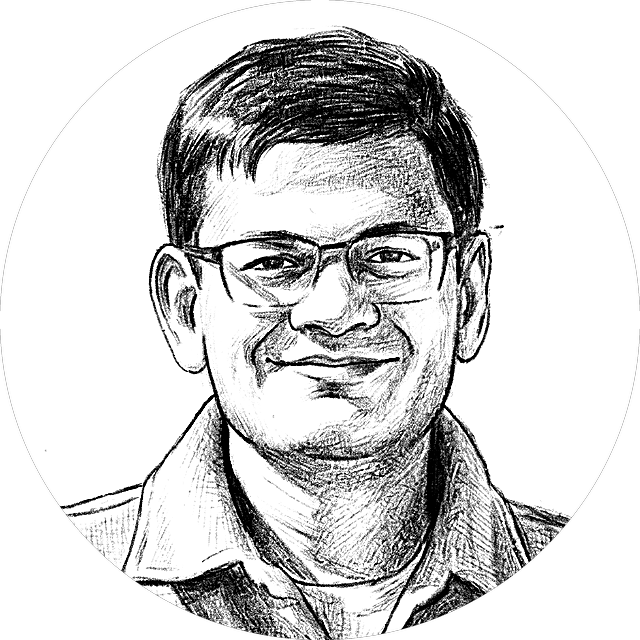

Hello, I'm Arun.
I am a cybersecurity researcher and engineer with over twenty years of experience protecting critical systems — from spacecraft and smart grids to the collaboration tools millions of people use every day. Currently a Principal Security Researcher at Microsoft working at the intersection of cybersecurity and AI; previously led cyber defense engineering and research at NASA's Jet Propulsion Laboratory.
Over the years, I have found that my greatest joy comes from solving challenging and ill-defined problems, and increasingly, problems with real societal impact. The advances in AI have let us dream bigger and take on harder challenges, and I have been actively exploring their potential across domains, especially healthcare and education. While I remain committed to advancing cybersecurity, I am equally dedicated to sharing what I learn — through writing, speaking, and mentoring the next generation.
- Leadership
- Team Building
- Applied Security Research
- Security Engineering
- Cyber Risk & Resilience
- AI for Security
- Security of AI
- AI/ML
- IEEE Standards Leadership
- Mentorship
Selected projects
View all →Ikigai Workbook
2026A single-page app to map what you love, what you're good at, what the world needs, and what you can be paid for.
Celestial Watchface
2025A Garmin Venu 3 watchface that lets you observe the night sky from any of the nine classical planets. Search and download it on the Connect IQ app store.
Recent writing
View all →- Growth In The Age Of AI: One Computer Scientist’s Reckoning
- Growth In The Age Of AI: One Computer Scientist’s Reckoning (Part 1 — How AI is Different)
- Why I Started Writing
Background
Ph.D. in Computer Science from USC (2015). Experience across startups, academia, semi-government and big tech. A decade at NASA JPL building and leading cyber defense for space missions. Now at Microsoft protecting Teams users at scale from the growing social-engineering threats.
Chaired AIAA's Aerospace Cybersecurity Working Group (2022–2026) and the ground-systems subgroup of IEEE 3536, the space system cybersecurity standard (2023–2026). Serve as an NSF panelist and Associate Editor for an IEEE Transactions on Aerospace and Electronic Systems special issue on secure space networks. Technical reviewer for The Spacecraft Hacker's Handbook (No Starch Press).
Beyond work
I am a lifelong learner, always challenging myself to pick up something new. My kids and wife are my inspiration, and in a way my mentors. Lately that's meant learning the piano, trying my hand at skating and skiing, starting to write, and teaching myself 3D modeling. I also love DIY projects, putting my 3D printer and Cricut to good use at every opportunity. Away from the screen, you will find me at the gym, biking, or hiking.